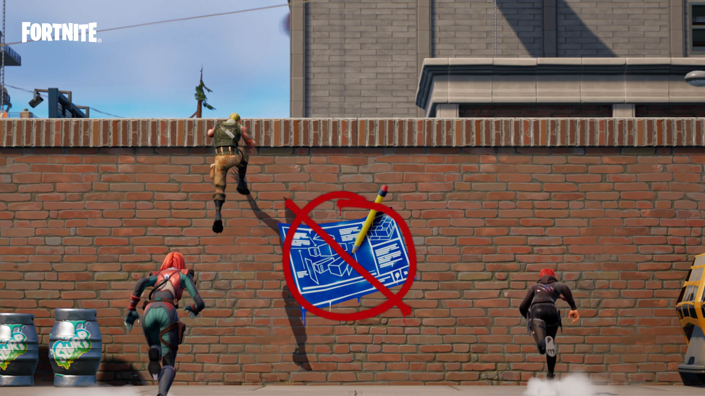

Fortnite es un mundo de experiencias múltiples.
Dejaos caer en la isla y competid hasta ser los últimos
jugadores (o equipos) que queden en pie. Cread una isla
personalizada con vuestras propias reglas. Quedad con vuestros
amigos en una isla creada por una de vuestras amistades. O eliminad
hordas de monstruos con otros jugadores para salvar el mundo.
MANERAS DE JUGAR A FORTNITE.
Hay miles de juegos disponibles en Fortnite.
Algunos han sido creados por Epic Games, pero muchos otros han
surgido de la imaginación de los creadores de la comunidad.
El juego incluye: Battle Royale, Cero construcción (Battle Royale sin construcción),
los juegos del modo Creativo creados por la comunidad y Salvar el mundo.
BATTLE ROYALE.
En Battle Royale de Fortnite, bajaos del autobús de batalla,
dejaos caer sobre la isla y combatid hasta que no quede nadie
más en pie. También podéis formar equipo con vuestros amigos u otros
jugadores para sobrevivir a vuestros oponentes. Usad la madera, el ladrillo
y el metal como materiales para construir estructuras que os ayuden a sobrevivir.
Siempre hay algo que hacer en Battle Royale de Fortnite: nuevos objetos, armas,
vehículos, modos, eventos especiales y temporadas. Cada nueva temporada aporta una
temática distintiva a la isla, como por ejemplo, la dominación de los agentes secretos o una inundación enorme.
CERO CONSTRUCCIONES.
El modo Cero construcción de Fortnite os pone a prueba para que demostréis
vuestras habilidades transversales y cómo os manejáis con las armas y los objetos.
Este juego de Fortnite es prácticamente como Battle Royale, pero sin construcción.
Los jugadores disponen del escudo total recargable como método de defensa para que los
ayude a mantenerse a cubierto. ¡Luchad con obstinación y pasad a la ofensiva!

MODO CREATIVO.
El modo Creativo pone Fortnite en la palma de vuestra mano.
Haced realidad vuestras ideas y comprobad lo lejos que pueden
llevaros vuestras habilidades e imaginación. Cread islas y juegos
únicos y compartidlas con vuestros amigos. Cread juntos. Probad miles de juegos
creados por gente como vosotros y encontrad inspiración.
SALVAR EL MUNDO.
En Salvar el mundo de Fortnite, exploraréis un mundo enorme y destructible y
formaréis equipo con otros jugadores para contener hordas de monstruos. A la
hora de enfrentaros a dichas criaturas (llamadas "cáscaras"), podréis volveros
más fuertes gracias a los botines que encontraréis, fabricando armas, domando
animales salvajes o expandiendo vuestra colección de héroes. ¡Construid una base
y reforzadla con trampas para mantener a raya a los cáscaras! Jugad a Salvar el mundo
con vuestros amigos y con otros jugadores de la comunidad de Fortnite. Podéis acceder
a Salvar el mundo comprando un pack de Salvar el mundo, a través de nuestro sitio web,
desde el propio juego o en el escaparate de vuestra consola. (Consultad las plataformas
compatibles a continuación).
USAD LA FUNCIÓN MULTIPLATAFORMA CON MILLONES DE JUGADORES DE LA COMUNIDAD DE FORTNITE.
Millones de jugadores de todo el mundo juegan a Fortnite, por lo que
siempre encontraréis a alguien con quien jugar, ya sea sobreviviéndolos en Battle Royale o
Cero construcción, probando mundos nuevos en el modo Creativo o eliminando cáscaras juntos en
Salvar el mundo. ¡Fortnite incluye la función multiplataforma, por lo que los usuarios de plataformas
distintas pueden jugar juntos!
¿EN QUÉ PLATAFORMAS ESTÁ DISPONIBLE FORTNITE?
En la actualidad, podéis descargar Battle Royale de Fortnite,
Cero construcción y el modo Creativo en PlayStation, Xbox, Nintendo
Switch, PC y en la aplicación de Epic Games para Android, a través de
Fortnite.com/Android o de la Galaxy Store de Samsung. Actualmente, Salvar el
mundo está disponible para PlayStation, Xbox y PC. Fortnite para iOS, Mac y
Google Play solo está disponible en la versión 13.40, y además, los jugadores
nuevos no podrán descargarlo en iOS. Salvar el mundo de Fortnite ya no está
disponible en Mac. Si queréis jugar a las nuevas actualizaciones de Fortnite,
podéis descargar el juego en cualquiera de las otras plataformas que se indican arriba.
DAD EL SALTO CON CALMA
Comenzar a jugar en Fortnite es muy sencillo, pero si necesitáis
recursos de ayuda, Fortnite.com lo tiene todo pensado. Nuestras preguntas
frecuentes de Fortnite, por ejemplo, contienen una gran cantidad de información
sobre sus características, las diferencias entre plataformas, las compras en el
juego y mucho más. El Centro de ayuda de Fortnite, además de ofrecer un enlace
para que os pongáis en contacto con la asistencia al jugador, supone otro recurso
de información muy útil. Si buscáis consejos sobre seguridad, nuestra página de
seguridad y protección ofrece información para proporcionaros (sí, lo habéis adivinado)
una experiencia segura y ayudaros a proteger vuestra cuenta. Muchos de los consejos
son puro sentido común, pero ¡nunca viene mal leerlos! Estos son tan solo una muestra
de todos los recursos disponibles a vuestro alcance para vivir la mejor experiencia
posible en Fortnite. ¡Esperamos que paséis a formar parte de la comunidad de Fortnite muy pronto!